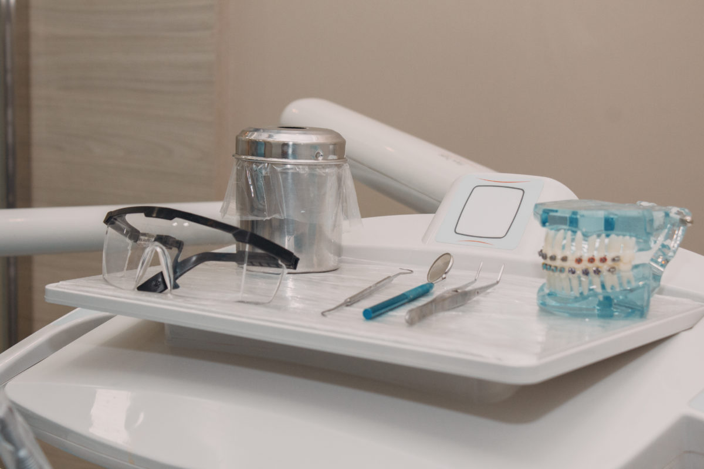

Quem pode usar aparelho ortodôntico?
Não existe uma resposta única baseada apenas na idade. A indicação depende das condições de saúde bucal e de um planejamento construído para cada pessoa.

Quando o assunto é aparelho ortodôntico, muita gente pensa somente na adolescência. Mas a avaliação ortodôntica pode ser relevante em diferentes fases da vida, sempre considerando as características de cada paciente.
Ortodontia em diferentes fases da vida
Em crianças e adolescentes, o acompanhamento pode considerar o desenvolvimento dos dentes e das arcadas. Já em adultos, a avaliação leva em conta a posição dentária, a mordida, o histórico de tratamentos e as condições atuais de saúde bucal.
A idade, isoladamente, não define se um tratamento é ou não indicado. É o diagnóstico que orienta a possibilidade e o momento de iniciar o cuidado.
O que precisa ser avaliado?
O profissional observa a saúde das gengivas e dos tecidos de suporte, o alinhamento dos dentes, as relações da mordida e os objetivos do paciente. Exames complementares podem ser solicitados quando necessários ao diagnóstico.
Em algumas situações, problemas gengivais ou outras condições devem ser tratados ou acompanhados antes da movimentação dentária. Essa sequência contribui para um planejamento responsável.
- Condições de dentes e gengivas.
- Necessidades funcionais e de alinhamento.
- Hábitos, rotina e possibilidade de acompanhamento.
O primeiro passo é uma conversa
Uma avaliação individual permite entender quais resultados são possíveis, quais cuidados serão exigidos e como será conduzido o acompanhamento.
Se você tem dúvidas sobre a necessidade de aparelho, leve suas expectativas ao cirurgião-dentista. Uma orientação personalizada vale mais do que escolher um modelo antes do diagnóstico.
Este material é educativo e não substitui diagnóstico, orientação ou avaliação individual por um cirurgião-dentista.
Para aprofundar o tema: American Association of Orthodontists — Tratamento ortodôntico na vida adulta (em inglês) ↗.
Conheça nossos tratamentos